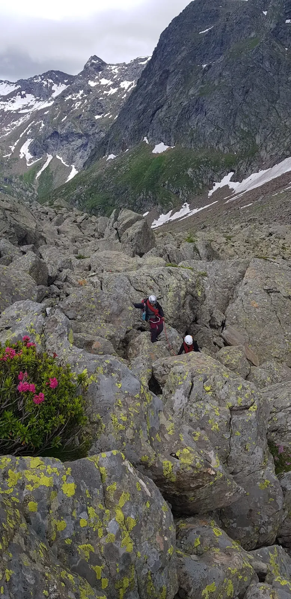

Campo Vallemaggia diventa Villaggio degli alpinisti

La genuina comunità ticinese convince con un turismo vicino alla natura.
Silenzioso, appartato e impressionante: chi visita Campo Vallemaggia incontra l’autenticità nel mezzo di un selvaggio mondo alpino. Il Comune ticinese sarà ufficialmente accolto il 21 giugno 2025 nel gruppo dei Villaggi degli alpinisti svizzeri che già comprende St. Antönien, i villaggi dell’Engadina Lavin, Guarda & Ardez e la Valle Onsernone.
Tipiche case in pietra ticinesi, imponenti palazzi, chiese pittoresche, laghi alpini cristallini, boschi di larici ariosi e impressionanti guglie di gneiss: il Comune di Campo, nell’omonima valle alpina ticinese, è uno dei villaggi più autentici della Svizzera meridionale. Il villaggio sparso, situato alla fine di una valle laterale della Vallemaggia, è uno dei più alti del Ticino e permette di immergersi in un mondo lontano dalla frenesia quotidiana. Il Comune si distingue per la natura intatta, un’offerta turistica selezionata e un attraente programma di escursioni e attività invernali lontano dai percorsi più battuti – tutti criteri che contraddistinguono i Villaggi degli alpinisti.
Grande impegno della popolazione locale
Il Comune di Campo Vallemaggia, composto dal capoluogo Campo e dai tre villaggi Cimalmotto, Pian di Campo e Niva, a prima vista non sembra un tipico Villaggio degli alpinisti. La popolazione è molto ridotta – solo circa 50 persone vi risiedono stabilmente – e anche le strutture ricettive e i negozi sono limitati. Nonostante ciò, il gruppo di coordinamento internazionale ha deciso di ammettere Campo Vallemaggia come Villaggio degli alpinisti. «La decisione è stata presa grazie al grande impegno delle persone del posto che si dedicano attivamente allo sviluppo sostenibile» spiega Julia Isler, Responsabile del progetto Villaggi degli alpinisti presso il Club Alpino Svizzero CAS. Inoltre, Campo Vallemaggia soddisfa i criteri grazie al paesaggio intatto, al carattere rurale e alle possibilità di sport di montagna vicine alla natura – e risponde agli obiettivi dell’iniziativa Villaggi degli alpinisti. Il 21 giugno 2025, Campo Vallemaggia diventerà ufficialmente il 4° Villaggio degli alpinisti in Svizzera e il 42° nell’arco alpino.
L’ammissione è una bella conferma del lavoro svolto dalla popolazione locale. Allo stesso tempo rappresenta l’inizio di un nuovo sviluppo per Campo Vallemaggia.
Timo Cadlolo / Responsabile dello sviluppo regionale della Vallemaggia
Per famiglie, amanti del relax e appassionati di sport di montagna
Solo recentemente, Campo Vallemaggia si è aperto al turismo dolce. L’offerta di alloggi è limitata ma in grado di soddisfare diverse esigenze. Nel Comune si trovano la curata Locanda Fior di Campo, l’agriturismo Munt la Reita e il rifugio alpino Rifugio la Reggia. Le attività sportive di montagna giocano un ruolo importante: Cimalmotto, ad esempio, è tappa dell’impegnativo sentiero in quota Via Alta Vallemaggia. Sentieri più semplici e altri più alpini conducono ad alpeggi, passi e cime che delimitano la valle a nord, sud e verso l’Italia. In inverno, grazie alla sua altitudine, il Comune offre ottime condizioni per lo sci alpinismo e le ciaspolate. Tra le mete di interesse storico-culturale figurano il sentiero didattico della pietra ollare che segue le tracce degli antichi artigiani e l’impressionante «muro delle capre» Muro Bombögn sulla cresta del Pizzo Bombögn, costruito per proteggere dai danni causati dalle capre e dall’erosione. Dal punto di vista geologico è interessante la frana – oggi stabilizzata – sotto Campo, considerata uno dei maggiori fenomeni di instabilità dei pendii in Europa. Tipici della regione sono i «torbe» in legno con base in muratura, usati come granai per la segale. Da non perdere durante una visita il tipico formaggio della Vallemaggia, prodotto con latte di capra e vacca dalle tre aziende agricole locali e venduto nei loro spacci.
Sull’iniziativa Villaggi degli Alpinisti
I Villaggi degli alpinisti sono piccoli e tranquilli centri che hanno scelto il turismo dolce. Al centro dell’iniziativa vi sono la gestione attenta dell’ambiente montano e il rafforzamento dell’economia regionale. Il progetto è promosso dai club alpini di Austria, Germania, Italia, Slovenia e Svizzera. Campo Vallemaggia è il 42° Villaggio degli alpinisti.
Il CAS coordina e dirige il progetto collaborando strettamente con la Scuola universitaria professionale di Zurigo (ZHAW) e i Responsabili locali. La fase progettuale 2024-2027 è finanziata dalla Confederazione (Innotour), dall’Ufficio dell’economia e del turismo del Cantone dei Grigioni, dalla promozione della sede del Cantone di Berna e dallo sviluppo regionale di Locarno e Vallemaggia.
Altre notizie
Tutte le news
Sostieni il gruppo OG del CAS Ticino
Aiuta il gruppo OG del CAS Ticino con i buoni “Support My Camp” della Migros! Hai ricevuto dei buoni “ Support My Camp ” alla Migros? Puoi trasformarli in un aiuto concreto per il nostro gruppo OG del CAS Ticino! Come…

Islanda da esplorare
Vuoi partecipare a un’esplorazione scialpinistica nel Nord Islanda? L’uscita CAS è prevista da venerdì 13 a venerdì 20 marzo 2026. Non perdere questa magnifica occasione! Iscriviti alla gita Programma Venerdì 13 marzo…

Informazioni sull’affiliazione
Andare insieme in montagna condividendo la gioia per il mondo alpino – il CAS unisce le persone appassionate della montagna, giovani e meno giovani. Siamo felici che anche tu appartenga alla più grande famiglia degli…